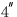
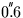
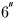
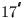
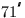
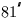
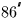

| DATE | D | Modified Julian Date (JD-2400000.5) |
|---|---|---|
| NP | I | planet: |
| 1=Mercury | ||
| 2=Venus | ||
| 3=Earth-Moon Barycentre | ||
| 4=Mars | ||
| 5=Jupiter | ||
| 6=Saturn | ||
| 7=Uranus | ||
| 8=Neptune | ||
| 9=Pluto |
| PV | D(6) | heliocentric |
|---|---|---|
| (AU, AU/s) | ||
| JSTAT | I | status: |
| +1 = warning: date outside of range | ||
| 0 = OK | ||
| -1 = illegal NP (outside 1-9) | ||
| -2 = solution didn't converge |
position (km) speed (metre/sec) Mercury 334 0.437 Venus 1060 0.855 EMB 2010 0.815 Mars 7690 1.98 Jupiter 71700 7.70 Saturn 199000 19.4 Uranus 564000 16.4 Neptune 158000 14.4 Pluto 36400 0.137From comparisons with DE102, Simon et al. quote the following longitude accuracies over the interval 1800-2200:
Mercury  VenusIn the case of Pluto, Meeus quotes an accuracy of EMB  Mars  Jupiter  Saturn  Uranus  Neptune
in longitude and
 in latitude for the period
1885-2099.
in latitude for the period
1885-2099.
For all except Pluto, over the period 1000-3000, the accuracy is better than 1.5 times that over 1800-2200. Outside the interval 1000-3000 the accuracy declines. For Pluto the accuracy declines rapidly outside the period 1885-2099. Outside these ranges (1885-2099 for Pluto, 1000-3000 for the rest) a ``date out of range'' warning status (JSTAT=+1) is returned.
SLALIB --- Positional Astronomy Library